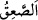
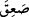

“Allah her şeye kadirdir” (el-Bakara, 2/284); “Allah herşeyin yaratıcısıdır.” (er-
Ra’d, 13/16) ve diğer âyetlerden müfessirler Allah’ın göklerin ve yerin ehlinden
olmadığı hükmünü çıkarmışlardır.
Muhakkıklardan birisi der ki: “ ölümden daha geneldir. Ölmeyen kimse
hakkında ölüm, ölen kimse hakkında ise kendinden geçmek anlamına gelir. İkinci kez
üfürüldüğünde, ölenler canlanır, kendinden geçenler ayılır. Tahkik ehli katında esas
alınan görüş budur.
Fakir (Bursevî) der ki: “Bu durumda İdrîs (a.s) da bu hükme dâhildir. Zira o ölmüş,
sonra diriltilip cennete konulmuştur. Bu yüzden o ölüm değil kendinden geçme hükmüne
dâhildir. Ancak “Allah’ın diledikleri müstesnâ” kısmına dâhil kimselerden olursa o
başka. Mûsâ (a.s)’a gelince, Tûr’da geçirdiği baygınlık sâyesinde bir daha baygınlık
geçirmeyecektir. Ölüm ise herkes için geneldir. Çünkü bir kişi bile kalmış olsa, Allah
Teâlâ’nın “Bugün hükümranlık kimin?!” sorusuna “Tek ve kahhâr olan Allah’ın!”
(Gâfir, 40/16) diye cevap verirdi (Oysa bu soruya cevabını bizzat Allah vermektedir).
Es’iletü’l-hikem’de der ki: “Onun zâtından başka herşey fânî olacaktır” (el-Kasas,
28/88) âyetine gelince, muhakkıklara göre onun mânâsı, helâke müsâiddir/kabul
edicidir, şeklindedir. Sonradan var olan her şey buna müsâiddir/kabul edicidir. Hattâ
kendi nefsinin vechine nisbetle devamlı olarak helâk olucudur ve adem-i mahzdır/sırf
yokluktur. Çünkü her şeyin iki vechi/yüzü/yönü vardır: Nefsine bakan yönü ve Rabbine
bakan yönü. Birinci yön helâk olucudur ve yoktur. İkinci yön ise -her ne kadar
zâhir/görünen bir gölgesi varsa da- Allah’ın ilminde ayn-ı sâbittir, Rabbi ile kâimdir.
Şu halde sonradan var olan her şey -kadîm ve ezelî olanın aksine- helâk ve yok olmasa
da kâbil-i helâk ve’l-adem, yâni helâk ve yok olmaya kâbiliyetlidir. Arşın helâk olacağı
hakkında bir haber vârid olmamış olması da bu mânâyı pekiştirmektedir. Cennetin de
öyle olduğu kabul edilebilir.
Fakir (Bursevî) der ki: Rasûlullah (s.a.)’den rivâyet edildiğine göre O Cebrâil
(a.s.)’a bu âyeti, (sûra üfürülünce) Allah’ın kimin düşüp ölmesini dilemediğini sordu.
Cebrâil (a.s.) da: “Onlar şehidlerdir ki Arş’ın çevresinde kılıçlarını kuşanmışlardır.”
diye cevap verdi. Bu rivâyet Keşfü’l-esrâr’da böyle geçmektedir. Kezâ Câfer-i Sâdık
(r.a.): “Âyette istisnâ edilenler Muhammed (s.a.), ehl-i beyti ve ma’rifet ehlidir.”
demiştir. Yine bazıları: “Bunlar, temkîn ve istikâmet ehlidir.” demiştir. Bütün bu sözler
ve benzerleri âyetteki “ın kendinden geçme/baygınlık mânâsına tefsir edilmesine
dayanmaktadır. Çünkü şehidler ve sıddîklardan onların benzerleri Rableri katında diri
olsalar da ölümü ikinci bir kez tatmayacaklardır. Aksi takdirde aslî yokluğa katılmış
olurlar ki bu Allah Teâlâ’nın hikmetine terstir. Dolayısıyla onlar sadece korku ve
baygınlığa mâruz kalırlar. Allah onları bundan muhafaza eder. Yâni, bu konuda -
Allah’ın diledikleri hâriç- ruhlarla diriler müşterektir.
Hikâye edilir ki bir kimse genç olarak öldüğü halde rüyada ihtiyarlamış olarak
görülür. Kendisine bunun sebebi sorulunca şu cevabı verir: “Kur’an’ın yaratılmış